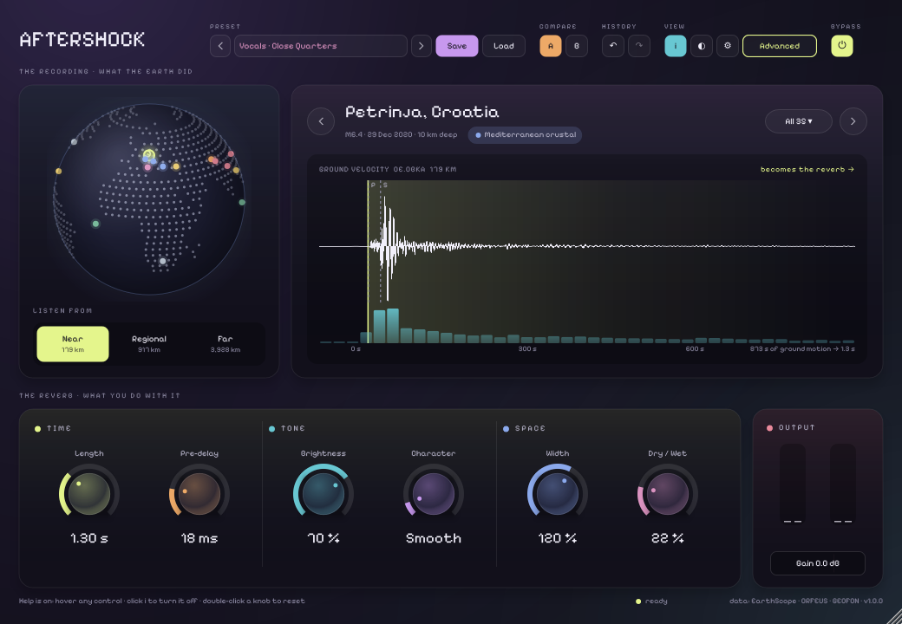
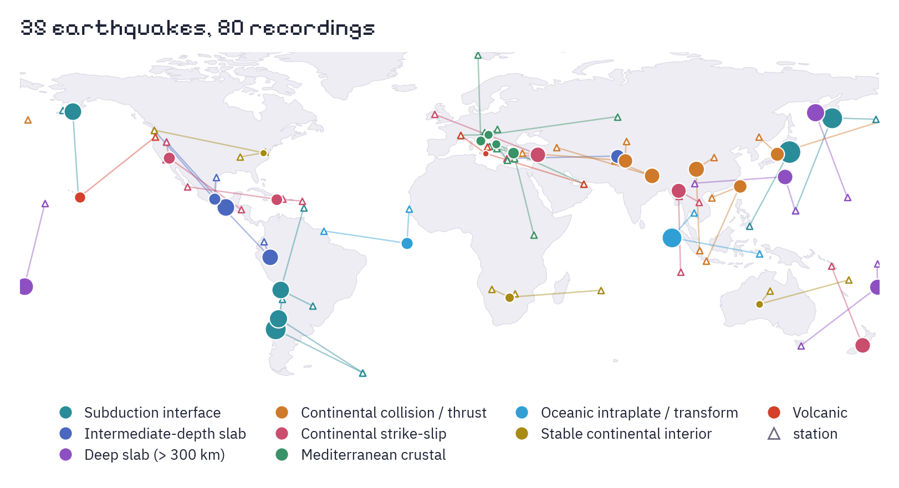
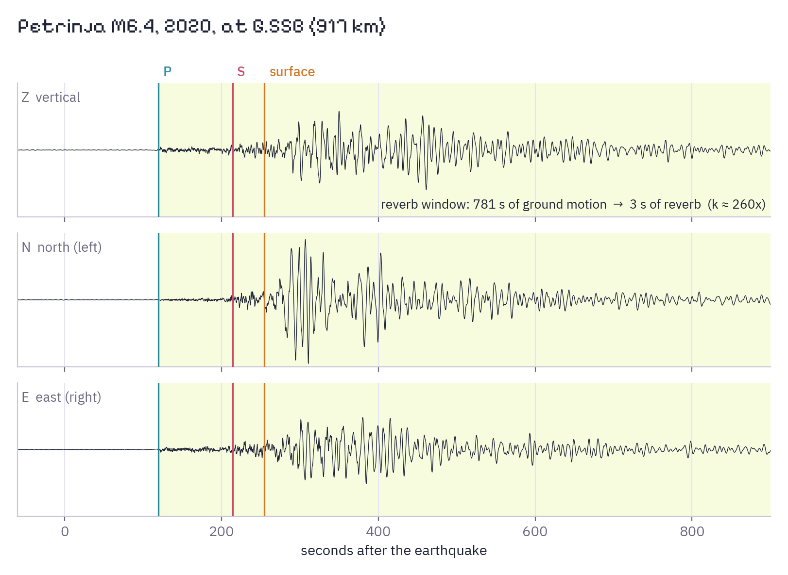
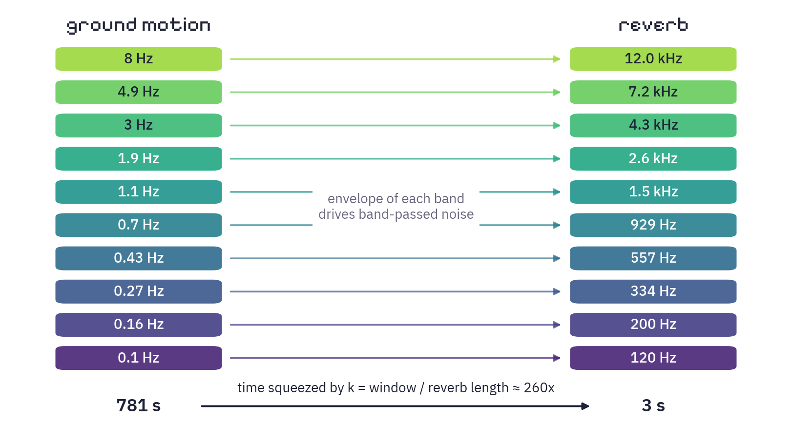
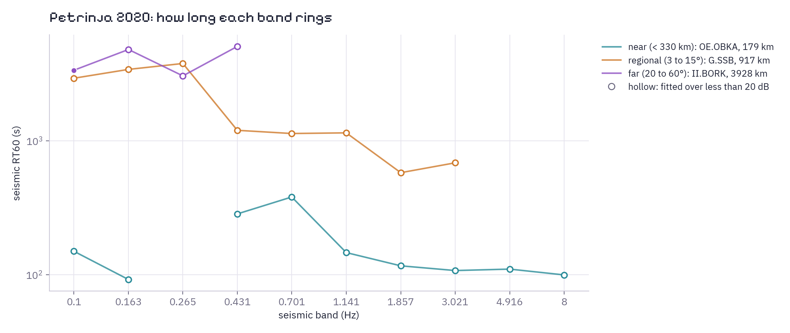
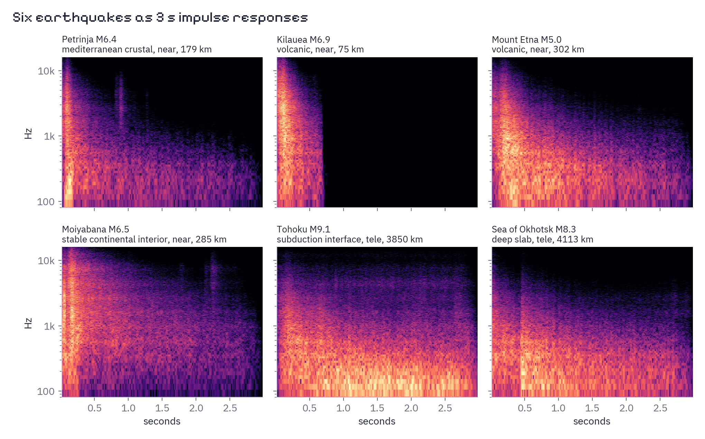
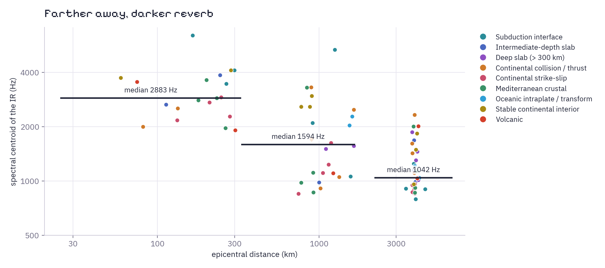
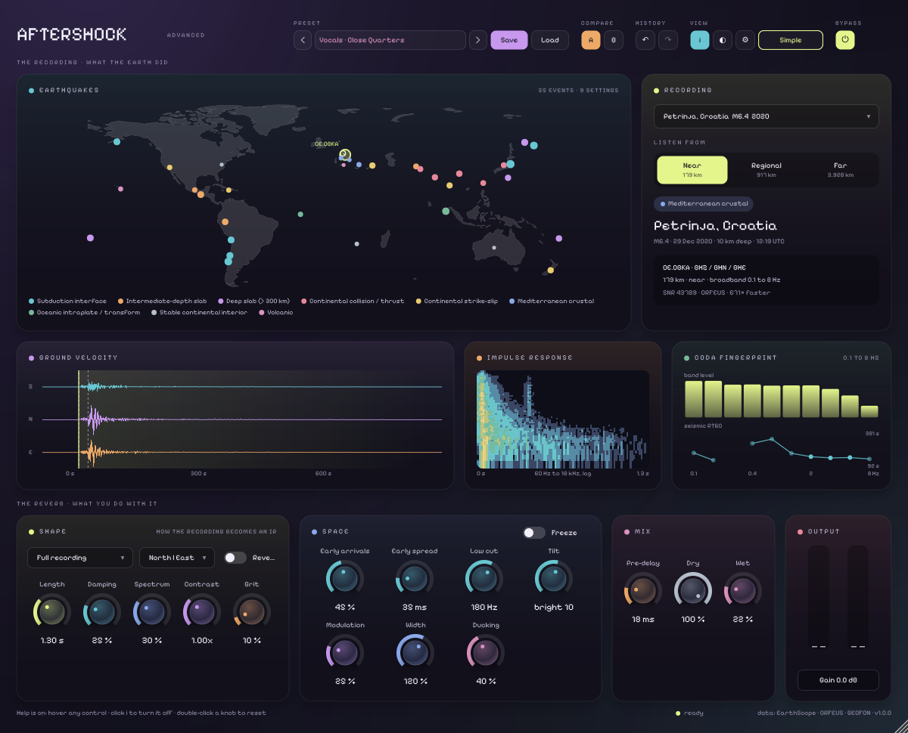
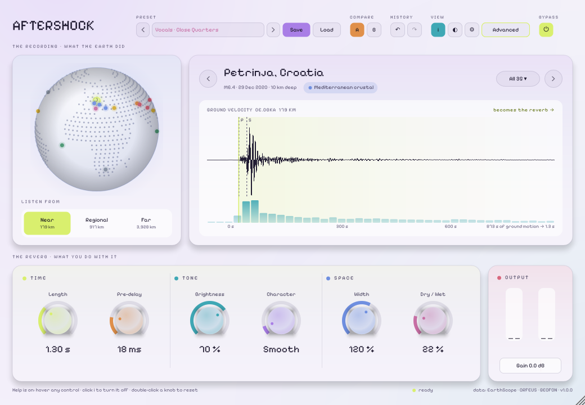
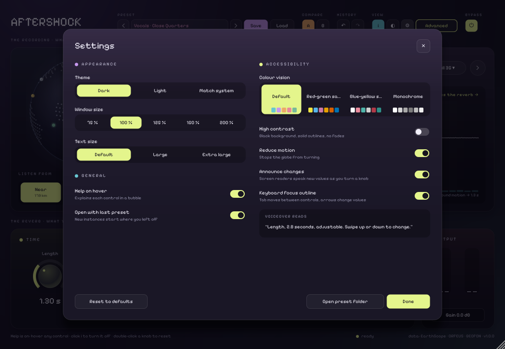

Aftershock: a reverb made from earthquakes
A reverb plugin whose tail is a real seismogram. 35 earthquakes, 80 recordings, a mapping I can defend, and a list of things I haven't proven yet.

The idea
When an earthquake happens, a seismometer far away first records the P wave, then the S wave, then the surface waves. After that comes the coda: energy that has scattered around the crust and arrives from everywhere, dying away slowly, high frequencies first.
That last part behaves a lot like the tail of a room reverb. Lots of reflections, no clear direction, a smooth decay where the highs go before the lows. So the question was simple: what if the tail of your reverb was a real earthquake?
It started from looking at "reverb from data" ideas, the kind of thing where a reverb is built from star fields or weather. Most of them map the data onto a reverb somehow. I wanted the one where the data already is a decay, so the mapping could stay as honest as possible. Seismic coda is that.
From prototype to plugin
The first version was an HTML page. That was the fastest way to try mappings: load a trace, change a formula, listen. Then came a Pure Data version, and then a proper JUCE plugin (VST3, AU and Standalone, built with CMake). Somewhere along the way the name changed from "Coda Reverb" to "Aftershock".
The Pd version taught me most of what the plugin had to get right:
- The wet path was silent at first. Resizing the array that
conv~reads made it abort. The fix was two buffers: render into one, swap when it's done. - Rendering was slow. I fixed that by running the render subpatch with
switch~upsampling, so it computed faster than real time. - The patch was too crowded. Every idea had a slider, and you couldn't see what mattered.
So the plugin had to be faster, cleaner, and meaningful. Not a toy where an earthquake picture sits on top of a normal reverb.
The data
I picked 35 earthquakes to cover nine tectonic settings: subduction interface, intermediate-depth slab, deep slab, continental collision, strike-slip, Mediterranean crust, oceanic, stable craton and volcanic. Each one is recorded at up to three distances: near (under about 330 km), regional (3 to 15 degrees) and far (20 to 60 degrees). That gives 80 recordings.

pack/catalog.json).Waveforms come from the FDSN data centres EarthScope, ORFEUS and GEOFON, downloaded with ObsPy. Origin times, locations and magnitudes come from the USGS ComCat catalogue, and the P and S arrival times from the iasp91 Earth model. The whole thing is two Python files, pipeline/events.py (the list) and pipeline/build_pack.py (everything else).

Cleaning, and the bugs that taught me things
Each recording gets its instrument response removed (pre-filter 0.02 to 9.5 Hz), is rotated to vertical, north and east, low-passed at 8 Hz and resampled to 20 Hz. Then it goes through checks, because a bad recording would make a reverb that sounds interesting for the wrong reason:
- Clipping: raw counts above 90% of the digitiser's range.
- Sensor steps: close to big quakes, the seismometer's mass can drift or the ground tilts. After response removal that step turns into a slow fake signal that even leaks backwards in time. These are rejected, not repaired.
- Energy before P: if there's already a lot going on before the first arrival, something is wrong.
- Gaps, and signal-to-noise below 8.
- An accelerometer fallback: near stations whose broadband sensors clip often have an accelerometer next to them (HN channels) that records strong shaking without clipping.
At first far too many stations were rejected, and almost every rejection was my bug, not the data. Two I remember:
The "energy before P" check flagged half of the quiet stations. It turned out to be catching ocean microseisms, the constant low hum of waves on the coast at around 0.2 Hz, which is always there. Checking only 0.5 to 5 Hz, over 20 s windows, fixed it.
Many other stations failed when I asked for their instrument metadata. A lot of them have an empty location code, and an empty code in an FDSN request means "any", not "empty"; it has to be written as --. And some stations don't record north and east at all, but two horizontal channels called 1 and 2 (or 2 and 3) at whatever angle the sensor was installed. Those have to be rotated to Z/N/E using the orientation stored in the station metadata, instead of being thrown out for missing N and E.
The mapping
This is the core of it, and the part where I made choices. Docs/SCIENCE.md in the repo keeps three things apart: what comes from the data, what is a design choice, and what hasn't been shown yet. I'll do the same here.

From the data: how much energy each seismic band has, and how its envelope rises and decays over time. The north and east horizontal motion. The bursts of energy between the P and S arrivals.
Design choices:
- Ten log-spaced bands from 0.1 to 8 Hz map onto ten log-spaced audio bands from 120 Hz to 12 kHz. Each seismic band's envelope drives band-passed noise in its audio band, so the reverb inherits each band's onset, peaks and decay.
- Time is compressed by k = window / reverb length, typically 100 to 700 times, so minutes of ground motion become seconds of reverb.
- North is left, east is right.
- The eight strongest bursts between P and S become the early reflections, with their real timing.
Log onto log is a choice, not a law. It keeps "low frequencies decay slowest" pointing the same way in both worlds, which is what makes the result sound like a reverb. The alternative is to play the seismogram faster by k, a single frequency transposition. That keeps the seismic spectrum exactly, but ties pitch to length: a shorter reverb is also higher. That's audification, and it's in the plugin too, as the Grit knob.
Two more controls decide how much of the data you hear. Spectrum sets how much of the band levels survive: at 1 you get the recording's real spectrum, which for far stations is very dark; at 0 all bands are equally loud and only the shape over time is left. Decay contrast scales how differently the bands decay: 1 is the data, 0 makes them decay alike, above 1 exaggerates it.
For every band the pipeline also measures a seismic RT60: the decay after the post-S peak, fitted between -5 and -25 dB like a T20 in room acoustics. Here is one earthquake seen from three distances:

Farther stations ring longer, and the far station has nothing left above 0.5 Hz: the highs were lost on the way. That's attenuation, and it's what the reverb carries over.
What I measured
I rendered all 80 recordings as 3 s impulse responses with neutral settings (spectrum 1, decay contrast 1, no grit, no damping) and measured them as audio: spectral centroid for brightness, and T20 extrapolated to 60 dB for length.


The reverb gets darker with distance, as attenuation predicts. The three volcanic recordings (near and regional) give much shorter tails, a median T20 of 1.4 s against 3.8 to 5.7 s for the distance groups. Deep-slab paths (7.1 s) and stable craton (6.0 s) give the longest.
These are not results yet. The groups are small (two deep-slab recordings, three volcanic), and the setting is mixed up with magnitude and with which station happened to be available. They're reasons to run a listening test.
The test I'm planning: render all recordings at a fixed length and loudness, and convolve speech, a snare and a piano chord with each. Then an ABX test (can people tell same-setting pairs from different-setting pairs?), attribute ratings for brightness and length to correlate with the measured values, and a control: a plain exponential-noise reverb matched in RT60 and spectrum. If listeners can't tell the control apart, the "seismic character" isn't reaching the ear, and I'll say so.
Until then I'm not claiming you can hear tectonic settings. You can hear distance, and I can measure it.
Making it a real plugin
The audio side is a zero-latency partitioned convolution. The impulse response is rendered on a background thread with a short debounce, so turning a knob never blocks audio; a new IR takes 60 to 90 ms to render. After the convolution there's a wet chain: pre-delay, the early arrivals, a 24 dB/oct low cut, tilt EQ, modulation, width, freeze and ducking.
There are 28 factory presets in seven categories (Vocals, Drums, Guitar & Keys, Synths & Pads, Mix & Ambience, Sound Design, Earth Tour), plus A/B compare, undo and redo, and meters. It passes pluginval at strictness 7, and GitHub Actions builds it for macOS (VST3, AU, Standalone, universal) and Windows (VST3, Standalone).

Design
The first design was in Figma. My friend Tito looked at it and gave me a list: put the data above the processing, put near/far under the globe, the signal above the controls, group the toolbar. And: "it looks a bit generic."
That last one sent me on a detour into a grey "seismograph drum" look, paper and ink. It was clever and it didn't feel like me. So I went back to my own style, colourful on dark or light, with a rotating dotted globe and soft colour fades. The layout reads top to bottom as a sentence: what the earth did, then what you do with it.

Accessibility
Aftershock works with screen readers (VoiceOver, Narrator, NVDA), and every knob speaks its value. Everything can be controlled with the keyboard, with visible focus. There's a high-contrast mode, colour-blind palettes (Okabe-Ito for red-green, plus blue-yellow and monochrome), reduced motion, three text sizes, and help on hover for every control.
My research is about turning data into sound so more people can get at it. A sonification tool that only works for people who can see the screen would miss that point.

Listen
Same snare, six earthquakes
Same voice, three distances
Petrinja 2020, recorded 179 km, 917 km and 3928 km away.
Presets
All 20 preset examples are on the examples page in the repo (examples/index.html).
Try it
Installers for macOS and Windows are on the releases page, with the manual (PDF). The code, the data pipeline and SCIENCE.md are in the repo. Found something off? Open an issue.
The figures on this page are made by make_figures.py from the repo's data and the plugin's own aftershock_render tool, so you can regenerate them.
What's next
- The listening test. It decides whether "setting" stays a feature or becomes just a label.
- More earthquakes. Especially near and regional recordings of great earthquakes, which mostly clip, and more volcanic and deep events so those groups aren't two or three recordings.
- Other mappings. Log onto log is one defensible choice; I want to keep the others open and test them the same way.
Credits and licence
Waveforms from the FDSN data centres EarthScope (formerly IRIS DMC), ORFEUS and GEOFON; each station's network has its own citation and DOI at fdsn.org/networks. Earthquake origins from the USGS ComCat catalogue, travel times from iasp91 via ObsPy TauP, coastlines from Natural Earth. Built with JUCE; the pixel font is Pixelify Sans. The dry example sounds are from Freesound, by sample_me, sound_bar_kk, tboneaudio, masterg180, johnzealeymusic, thescarlettwitch89, plagasul, timkahn, saltbearer, sirbagel and frankyfire (see CREDITS.md).
The code is open source under the GNU AGPL v3. Free to port, by humans. Bring your own ears.